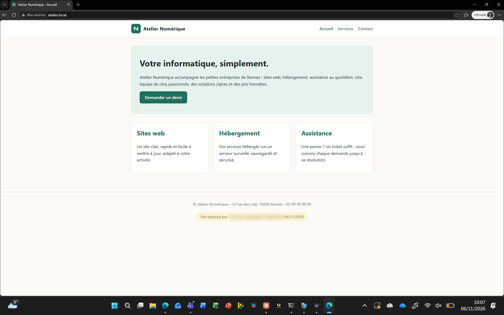
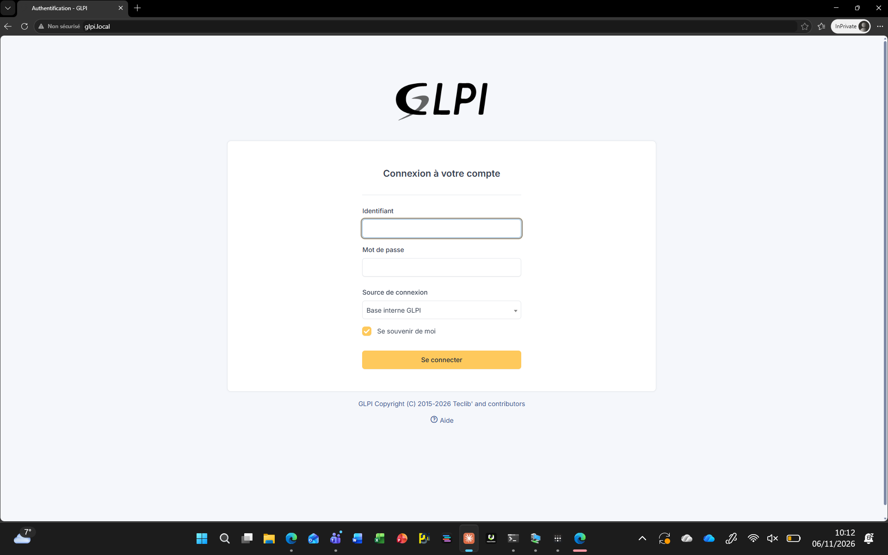
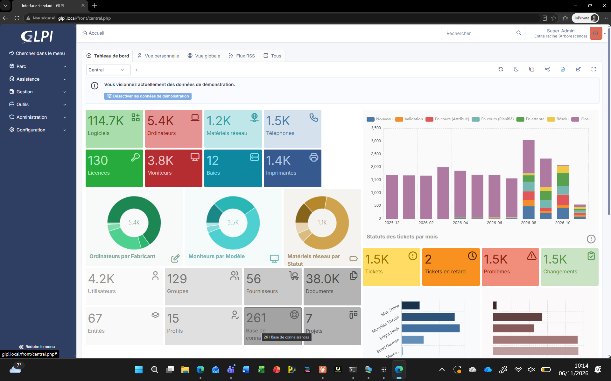

Contexte
Karim, responsable d'une petite entreprise (Atelier Numérique, 6 personnes), vient d'acheter un serveur. Il veut un site d'accueil et un outil pour suivre les pannes de ses collègues, qui notent aujourd'hui leurs demandes sur papier. Il n'y a pas de service informatique : je devais tout installer, tester et lui laisser une documentation.
Ce que j'ai fait
- Installé Apache sur une VM Debian 13 et vérifié qu'il répond.
- Récupéré le site de Karim avec Git et créé un hôte virtuel
atelier.local. - Installé PHP et ses extensions, testé avec une page
phpinfo()que j'ai supprimée ensuite. - Installé et sécurisé MariaDB, créé la base
glpiet un utilisateur qui n'a des droits que sur cette base. - Installé GLPI 12 dans son propre hôte virtuel
glpi.local, changé les mots de passe par défaut et supprimé le script d'installation. - Écrit un plan de 8 tests et un dossier d'installation pour que quelqu'un d'autre puisse reprendre le serveur.
- Debian 13
- Hyper-V
- Apache 2.4
- PHP 8.4
- MariaDB 11.8
- GLPI 12
- Git
- SSH
Résultat
Le site et GLPI marchent sur le même serveur, chacun avec son nom. Karim a un dossier d'installation qui explique où sont les fichiers, comment vérifier les services et quoi faire en cas de problème.
| Service | Action | Résultat obtenu | Statut |
|---|---|---|---|
| Apache | apachectl configtest | Syntax OK | OK |
| MariaDB | Connexion avec glpi_user | Connexion réussie | OK |
| GLPI | Ouvrir http://glpi.local | Page de connexion affichée | OK |
Ce que j'ai appris
Avancer brique par brique et tester à chaque fois, ça évite de chercher une panne au milieu de tout. J'ai aussi appliqué le moindre privilège sur la base de données et j'ai noté les problèmes rencontrés (sudo absent, message AH00558 d'Apache) avec leur solution.
Preuves


